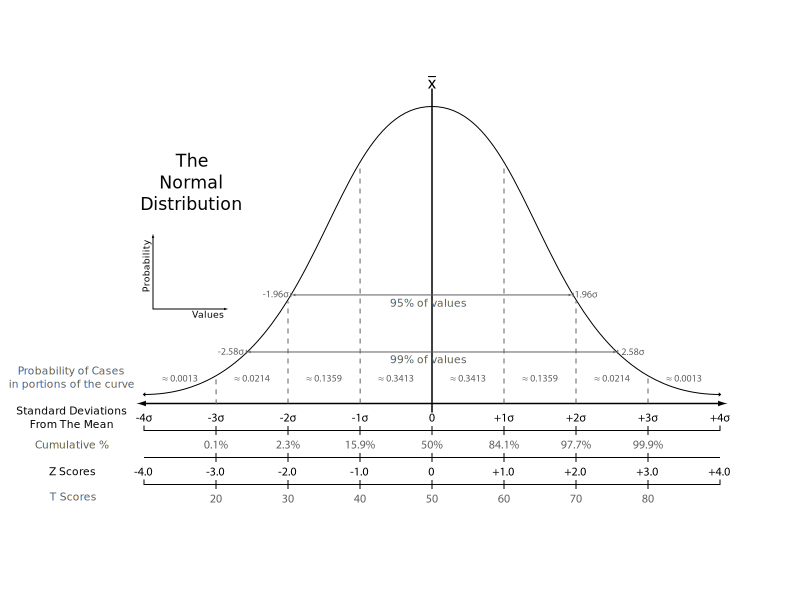

Content from Descriptive Statistics
Last updated on 2025-12-08 | Edit this page
Overview
Questions
- How can we describe a set of data?
Objectives
- Learn about the most common ways of describing a variable
Introduction
Descriptive statistic involves summarising or describing a set of data. It usually presents quantitative descriptions in a short form, and helps to simplify large datasets.
Most descriptive statistical parameters applies to just one variable in our data, and includes:
| Central tendency | Measure of variation | Measure of shape |
|---|---|---|
| Mean | Range | Skewness |
| Median | Quartiles | Kurtosis |
| Mode | Inter Quartile Range | |
| Variance | ||
| Standard deviation | ||
| Percentiles |
Central tendency
The easiest way to get summary statistics on data is to use the
summarise function from the tidyverse
package.
R
library(tidyverse)
In the following we are working with the palmerpenguins
dataset. Note that the actual data is called penguins and
is part of the package palmerpenguins:
R
library(palmerpenguins)
head(penguins)
OUTPUT
# A tibble: 6 × 8
species island bill_length_mm bill_depth_mm flipper_length_mm body_mass_g
<fct> <fct> <dbl> <dbl> <int> <int>
1 Adelie Torgersen 39.1 18.7 181 3750
2 Adelie Torgersen 39.5 17.4 186 3800
3 Adelie Torgersen 40.3 18 195 3250
4 Adelie Torgersen NA NA NA NA
5 Adelie Torgersen 36.7 19.3 193 3450
6 Adelie Torgersen 39.3 20.6 190 3650
# ℹ 2 more variables: sex <fct>, year <int>344 penguins have been recorded at three different islands over three years. Three different penguin species are in the dataset, and we have data on their weight, sex, length of their flippers and two measurements of their bill (beak).
 {Copyright Allison
Horst}
{Copyright Allison
Horst}
Specifically we are going to work with the weight of the penguins,
stored in the variable body_mass_g:
R
penguins$body_mass_g
OUTPUT
[1] 3750 3800 3250 NA 3450 3650 3625 4675 3475 4250 3300 3700 3200 3800 4400
[16] 3700 3450 4500 3325 4200 3400 3600 3800 3950 3800 3800 3550 3200 3150 3950
[31] 3250 3900 3300 3900 3325 4150 3950 3550 3300 4650 3150 3900 3100 4400 3000
[46] 4600 3425 2975 3450 4150 3500 4300 3450 4050 2900 3700 3550 3800 2850 3750
[61] 3150 4400 3600 4050 2850 3950 3350 4100 3050 4450 3600 3900 3550 4150 3700
[76] 4250 3700 3900 3550 4000 3200 4700 3800 4200 3350 3550 3800 3500 3950 3600
[91] 3550 4300 3400 4450 3300 4300 3700 4350 2900 4100 3725 4725 3075 4250 2925
[106] 3550 3750 3900 3175 4775 3825 4600 3200 4275 3900 4075 2900 3775 3350 3325
[121] 3150 3500 3450 3875 3050 4000 3275 4300 3050 4000 3325 3500 3500 4475 3425
[136] 3900 3175 3975 3400 4250 3400 3475 3050 3725 3000 3650 4250 3475 3450 3750
[151] 3700 4000 4500 5700 4450 5700 5400 4550 4800 5200 4400 5150 4650 5550 4650
[166] 5850 4200 5850 4150 6300 4800 5350 5700 5000 4400 5050 5000 5100 4100 5650
[181] 4600 5550 5250 4700 5050 6050 5150 5400 4950 5250 4350 5350 3950 5700 4300
[196] 4750 5550 4900 4200 5400 5100 5300 4850 5300 4400 5000 4900 5050 4300 5000
[211] 4450 5550 4200 5300 4400 5650 4700 5700 4650 5800 4700 5550 4750 5000 5100
[226] 5200 4700 5800 4600 6000 4750 5950 4625 5450 4725 5350 4750 5600 4600 5300
[241] 4875 5550 4950 5400 4750 5650 4850 5200 4925 4875 4625 5250 4850 5600 4975
[256] 5500 4725 5500 4700 5500 4575 5500 5000 5950 4650 5500 4375 5850 4875 6000
[271] 4925 NA 4850 5750 5200 5400 3500 3900 3650 3525 3725 3950 3250 3750 4150
[286] 3700 3800 3775 3700 4050 3575 4050 3300 3700 3450 4400 3600 3400 2900 3800
[301] 3300 4150 3400 3800 3700 4550 3200 4300 3350 4100 3600 3900 3850 4800 2700
[316] 4500 3950 3650 3550 3500 3675 4450 3400 4300 3250 3675 3325 3950 3600 4050
[331] 3350 3450 3250 4050 3800 3525 3950 3650 3650 4000 3400 3775 4100 3775How can we describe these values?
Mean
The mean is the average of all datapoints. We add all values
(excluding the missing values encoded with NA), and divide
with the number of observations:
\[\overline{x} = \frac{1}{N}\sum_1^N x_i\] Where N is the number of observations, and \(x_i\) is the individual observations in the sample \(x\).
The easiest way of getting the mean is using the mean()
function:
R
mean(penguins$body_mass_g, na.rm = TRUE)
OUTPUT
[1] 4201.754A slightly more cumbersome way is using the summarise()
function from tidyverse:
R
penguins |>
summarise(avg_mass = mean(body_mass_g, na.rm = T))
OUTPUT
# A tibble: 1 × 1
avg_mass
<dbl>
1 4202.As we will see below, this function streamlines the process of getting multiple descriptive values.
Barring significant outliers, mean is an expression of
position of the data. This is the weight we would expect a random
penguin in our dataset to have.
However, we have three different species of penguins in the dataset, and they have quite different average weights. There is also a significant difference in the average weight for the two sexes.
We will get to that at the end of this segment.
Median
Similarly to the average/mean, the median is an
expression of the location of the data. If we order our data by size,
from the smallest to the largest value, and locate the middle
observation, we get the median. This is the value that half of the
observations is smaller than. And half the observations is larger.
R
median(penguins$body_mass_g, na.rm = TRUE)
OUTPUT
[1] 4050We can note that the mean is larger than the median. This indicates that the data is skewed, in this case toward the larger penguins.
We can get both median and mean in one go
using the summarise() function:
R
penguins |>
summarise(median = median(body_mass_g, na.rm = TRUE),
mean = mean(body_mass_g, na.rm = TRUE))
OUTPUT
# A tibble: 1 × 2
median mean
<dbl> <dbl>
1 4050 4202.Mode
Mode is the most common, or frequently occurring, observation. R does not have a build-in function for this, but we can easily find the mode by counting the different observations,and locating the most common one.
We typically do not use this for continous variables. The mode of the
sex variable in this dataset can be found like this:
R
penguins |>
count(sex) |>
arrange(desc(n))
OUTPUT
# A tibble: 3 × 2
sex n
<fct> <int>
1 male 168
2 female 165
3 <NA> 11We count the different values in the sex variable, and
arrange the counts in descending order (desc). The mode of
the sex variable is male.
In this specific case, we note that the dataset is pretty evenly balanced regarding the two sexes.
Measures of variance
Knowing where the observations are located is interesting. But how do they vary? How can we describe the variation in the data?
Range
The simplest information about the variation is the range. What is the smallest and what is the largest value? Or, what is the spread?
We can get that by using the min() and
max() functions in a summarise() function:
R
penguins |>
summarise(min = min(body_mass_g, na.rm = T),
max = max(body_mass_g, na.rm = T))
OUTPUT
# A tibble: 1 × 2
min max
<int> <int>
1 2700 6300There is a dedicated function, range(), that does the
same. However it returns two values (for each row), and the summarise
function expects to get one value.
If we would like to use the range() function, we can add
it using the reframe() function instead of
summarise():
R
penguins |>
reframe(range = range(body_mass_g, na.rm = T))
OUTPUT
# A tibble: 2 × 1
range
<int>
1 2700
2 6300Variance
The observations varies. They are not all located at the mean (or median), but are spread out on both sides of the mean. Can we get a numerical value describing that?
An obvious way would be to calculate the difference between each of the observations and the mean, and then take the average of those differences.
That will give us the average deviation. But we have a problem. The average weight of penguins was 4202 (rounded). Look at two penguins, one weighing 5000, and another weighing 3425. The differences are:
- 5000 - 4202 = 798
- 3425 - 4202 = -777
The sum of those two differences is: -777 + 798 = 21 g. And the average is then 10.5 gram. That is not a good estimate of a variation from the mean of more than 700 gram.
The problem is, that the differences can be both positive and negative, and might cancel each other out.
We solve that problem by squaring the differences, and calculate the mean of those.
For the population variance, the mathematical notation would be:
\[ \sigma^2 = \frac{\sum_{i=1}^N(x_i - \mu)^2}{N} \]
Population or sample?
Why are we suddenly using \(\mu\) instead of \(\overline{x}\)? Because this definition uses the population mean. The mean, or average, in the entire population of all penguins everywhere in the universe. But we have not weighed all those penguins.
And the sample variance:
\[ s^2 = \frac{\sum_{i=1}^N(x_i - \overline{x})^2}{N-1} \]
Note that we also change the \(\sigma\) to an \(s\).
And again we are not going to do that by hand, but will ask R to do it for us:
R
penguins |>
summarise(
variance = var(body_mass_g, na.rm = T)
)
OUTPUT
# A tibble: 1 × 1
variance
<dbl>
1 643131.Standard deviation
There is a problem with the variance. It is 643131, completely off scale from the actual values. There is also a problem with the unit which is in \(g^2\).
A measurement of the variation of the data would be the standard deviation, simply defined as the square root of the variance:
R
penguins |>
summarise(
s = sd(body_mass_g, na.rm = T)
)
OUTPUT
# A tibble: 1 × 1
s
<dbl>
1 802.Since the standard deviation occurs in several statistical tests, it is more frequently used than the variance. It is also more intuitively relateable to the mean.
A histogram
A visual illustration of the data can be nice. Often one of the first we make, is a histogram.
A histogram is a plot or graph where we split the range of observations in a number of “buckets”, and count the number of observations in each bucket:
R
penguins |>
select(body_mass_g) |>
filter(!is.na(body_mass_g)) |>
mutate(buckets = cut(body_mass_g, breaks=seq(2500,6500,500))) |>
group_by(buckets) |>
summarise(antal = n())
OUTPUT
# A tibble: 8 × 2
buckets antal
<fct> <int>
1 (2.5e+03,3e+03] 11
2 (3e+03,3.5e+03] 67
3 (3.5e+03,4e+03] 92
4 (4e+03,4.5e+03] 57
5 (4.5e+03,5e+03] 54
6 (5e+03,5.5e+03] 33
7 (5.5e+03,6e+03] 26
8 (6e+03,6.5e+03] 2Typically, rather than counting ourself, we leave the work to R, and make a histogram directly:
R
penguins |>
ggplot((aes(x=body_mass_g))) +
geom_histogram()
OUTPUT
`stat_bin()` using `bins = 30`. Pick better value `binwidth`.WARNING
Warning: Removed 2 rows containing non-finite outside the scale range
(`stat_bin()`).By default ggplot chooses 30 bins, typically we should chose a different number:
R
penguins |>
ggplot((aes(x=body_mass_g))) +
geom_histogram(bins = 25)
WARNING
Warning: Removed 2 rows containing non-finite outside the scale range
(`stat_bin()`).Or, ideally, set the widths of them, manually:
R
penguins |>
ggplot((aes(x=body_mass_g))) +
geom_histogram(binwidth = 250) +
ggtitle("Histogram with binwidth = 250 g")
WARNING
Warning: Removed 2 rows containing non-finite outside the scale range
(`stat_bin()`).Or even specify the exact intervals we want, here intervals from 0 to 6500 gram in intervals of 250 gram:
R
penguins |>
ggplot((aes(x=body_mass_g))) +
geom_histogram(breaks = seq(0,6500,250)) +
ggtitle("Histogram with bins in 250 g steps from 0 to 6500 g")
WARNING
Warning: Removed 2 rows containing non-finite outside the scale range
(`stat_bin()`).The histogram provides us with a visual indication of both range, the variation of the values, and an idea about where the data is located.
Quartiles
The median can be understood as splitting the data in two equally sized parts, where one is characterized by having values smaller than the median and the other as having values larger than the median. It is the value where 50% of the observations are smaller.
Similary we can calculate the value where 25% of the observations are smaller.
That is often called the first quartile, where the median is the 50%, or second quartile. Quartile implies four parts, and the existence of a third or 75% quartile.
We can calcultate those using the quantile function:
R
quantile(penguins$body_mass_g, probs = .25, na.rm = T)
OUTPUT
25%
3550 and
R
quantile(penguins$body_mass_g, probs = .75, na.rm = T)
OUTPUT
75%
4750 We are often interested in knowing the range in which 50% of the observations fall.
That is used often enough that we have a dedicated function for it:
R
penguins |>
summarise(iqr = IQR(body_mass_g, na.rm = T))
OUTPUT
# A tibble: 1 × 1
iqr
<dbl>
1 1200The name of the quantile function implies that we might have other quantiles than quartiles. Actually we can calculate any quantile, eg the 2.5% quantile:
R
quantile(penguins$body_mass_g, probs = .025, na.rm = T)
OUTPUT
2.5%
2988.125 The individual quantiles can be interesting in themselves. If we want a visual representation of all quantiles, we can calculate all of them, and plot them.
Instead of doing that by hand, we can use a concept called CDF or cumulative density function:
R
CDF <- ecdf(penguins$body_mass_g)
CDF
OUTPUT
Empirical CDF
Call: ecdf(penguins$body_mass_g)
x[1:94] = 2700, 2850, 2900, ..., 6050, 6300That was not very informative. Lets plot it:
Measures of shape
Skewness
We previously saw a histogram of the data, and noted that the observations were skewed to the left, and that the “tail” on the right was longer than on the left. That skewness can be quantised.
There is no function for skewness build into R, but we can get it
from the library e1071
R
library(e1071)
OUTPUT
Attaching package: 'e1071'OUTPUT
The following object is masked from 'package:ggplot2':
elementR
skewness(penguins$body_mass_g, na.rm = T)
OUTPUT
[1] 0.4662117The skewness is positive, indicating that the data are skewed to the left, just as we saw. A negative skewness would indicate that the data skew to the right.
Kurtosis
Another parameter describing the shape of the data is kurtosis. We can think of that as either “are there too many observations in the tails?” leading to a relatively low peak. Or, as “how pointy is the peak” - because the majority of observations are centered in the peak, rather than appearing in the tails.
We use the e1071 package again:
R
kurtosis(penguins$body_mass_g, na.rm = T)
OUTPUT
[1] -0.73952Kurtosis is defined weirdly, and here we get “excess” kurtosis, the actual kurtosis minus 3. We have negative kurtosis, indicating that the peak is flat, and the tails are fat.
Everything Everywhere All at Once
A lot of these descriptive values can be gotten for every variable in
the dataset using the summary function:
R
summary(penguins)
OUTPUT
species island bill_length_mm bill_depth_mm
Adelie :152 Biscoe :168 Min. :32.10 Min. :13.10
Chinstrap: 68 Dream :124 1st Qu.:39.23 1st Qu.:15.60
Gentoo :124 Torgersen: 52 Median :44.45 Median :17.30
Mean :43.92 Mean :17.15
3rd Qu.:48.50 3rd Qu.:18.70
Max. :59.60 Max. :21.50
NA's :2 NA's :2
flipper_length_mm body_mass_g sex year
Min. :172.0 Min. :2700 female:165 Min. :2007
1st Qu.:190.0 1st Qu.:3550 male :168 1st Qu.:2007
Median :197.0 Median :4050 NA's : 11 Median :2008
Mean :200.9 Mean :4202 Mean :2008
3rd Qu.:213.0 3rd Qu.:4750 3rd Qu.:2009
Max. :231.0 Max. :6300 Max. :2009
NA's :2 NA's :2 Here we get the range, the 1st and 3rd quantiles (and from those the IQR), the median and the mean and, rather useful, the number of missing values in each variable.
We can also get all the descriptive values in one table, by adding more than one summarizing function to the summarise function:
R
penguins |>
summarise(min = min(body_mass_g, na.rm = T),
max = max(body_mass_g, na.rm = T),
mean = mean(body_mass_g, na.rm = T),
median = median(body_mass_g, na.rm = T),
stddev = sd(body_mass_g, na.rm = T),
var = var(body_mass_g, na.rm = T),
Q1 = quantile(body_mass_g, probs = .25, na.rm = T),
Q3 = quantile(body_mass_g, probs = .75, na.rm = T),
iqr = IQR(body_mass_g, na.rm = T),
skew = skewness(body_mass_g, na.rm = T),
kurtosis = kurtosis(body_mass_g, na.rm = T)
)
OUTPUT
# A tibble: 1 × 11
min max mean median stddev var Q1 Q3 iqr skew kurtosis
<int> <int> <dbl> <dbl> <dbl> <dbl> <dbl> <dbl> <dbl> <dbl> <dbl>
1 2700 6300 4202. 4050 802. 643131. 3550 4750 1200 0.466 -0.740As noted, we have three different species of penguins in the dataset. Their weight varies a lot. If we want to do the summarising on each for the species, we can group the data by species, before summarising:
R
penguins |>
group_by(species) |>
summarise(min = min(body_mass_g, na.rm = T),
max = max(body_mass_g, na.rm = T),
mean = mean(body_mass_g, na.rm = T),
median = median(body_mass_g, na.rm = T),
stddev = sd(body_mass_g, na.rm = T)
)
OUTPUT
# A tibble: 3 × 6
species min max mean median stddev
<fct> <int> <int> <dbl> <dbl> <dbl>
1 Adelie 2850 4775 3701. 3700 459.
2 Chinstrap 2700 4800 3733. 3700 384.
3 Gentoo 3950 6300 5076. 5000 504.We have removed some summary statistics in order to get a smaller table.
Boxplots
Finally boxplots offers a way of visualising some of the summary statistics:
R
penguins |>
ggplot(aes(x=body_mass_g, y = sex)) +
geom_boxplot()
WARNING
Warning: Removed 2 rows containing non-finite outside the scale range
(`stat_boxplot()`).The boxplot shows us the median (the fat line in the middel of each box), the 1st and 3rd quartiles (the ends of the boxes), and the range, with the whiskers at each end of the boxes, illustrating the minimum and maximum. Any observations, more than 1.5 times the IQR from either the 1st or 3rd quartiles, are deemed as outliers and would be plotted as individual points in the plot.
Counting
Most of the descriptive functions above are focused on continuous variables, maybe grouped by one or more categorical variables.
What about the categorical themselves?
The one thing we can do looking only at categorical variables, is counting.
Counting the different values in a single categorical variable in
base-R is done using the table(() function
R
table(penguins$sex)
OUTPUT
female male
165 168 Often we are interested in cross tables, tables where we count the different combinations of the values in more than one categorical variable, eg the distribution of the two different penguin sexes on the three different islands:
R
table(penguins$island, penguins$sex)
OUTPUT
female male
Biscoe 80 83
Dream 61 62
Torgersen 24 23We can event group on three (or more) categorical variables, but the output becomes increasingly difficult to read the mote variables we add:
R
table(penguins$island, penguins$sex, penguins$species)
OUTPUT
, , = Adelie
female male
Biscoe 22 22
Dream 27 28
Torgersen 24 23
, , = Chinstrap
female male
Biscoe 0 0
Dream 34 34
Torgersen 0 0
, , = Gentoo
female male
Biscoe 58 61
Dream 0 0
Torgersen 0 0Aggregate
A different way of doing that in base-R is using the
aggregate() function:
R
aggregate(sex ~ island, data = penguins, FUN = length)
OUTPUT
island sex
1 Biscoe 163
2 Dream 123
3 Torgersen 47Here we construct the crosstable using the formula notation, and
specify which function we want to apply on the results. This can be used
to calculate summary statistics on groups, by adjusting the
FUN argument.
Counting in tidyverse
In tidyverse we will typically group the data by the variables we want to count, and then tallying them:
R
penguins |>
group_by(sex) |>
tally()
OUTPUT
# A tibble: 3 × 2
sex n
<fct> <int>
1 female 165
2 male 168
3 <NA> 11group_by works equally well with more than one
group:
R
penguins |>
group_by(sex, species) |>
tally()
OUTPUT
# A tibble: 8 × 3
# Groups: sex [3]
sex species n
<fct> <fct> <int>
1 female Adelie 73
2 female Chinstrap 34
3 female Gentoo 58
4 male Adelie 73
5 male Chinstrap 34
6 male Gentoo 61
7 <NA> Adelie 6
8 <NA> Gentoo 5But the output is in a long format, and often requires some manipulation to get into a wider tabular format.
A shortcut exists in tidyverse, count, which combines
group_by and tally:
R
penguins |>
count(sex, species)
OUTPUT
# A tibble: 8 × 3
sex species n
<fct> <fct> <int>
1 female Adelie 73
2 female Chinstrap 34
3 female Gentoo 58
4 male Adelie 73
5 male Chinstrap 34
6 male Gentoo 61
7 <NA> Adelie 6
8 <NA> Gentoo 5- We have access to a lot of summarising descriptive indicators the the location, spread and shape of our data.
Content from Tidy Data
Last updated on 2025-12-08 | Edit this page
Overview
Questions
- How do we structure our data best?
Objectives
- Explain what tidy data is
Introduction
Most of what we want to do with our data is relatively simple. If the data is structured in the right way.
Working within the paradigm of tidyverse it is
preferable if the data is tidy.

Tidy data is not the opposite of messy data. Data can be nice and well structured, tidy as in non-messy, without being tidy in the way we understand it in this context.

Tidy data in the world of R, especially the dialect of R we call tidyverse, are characterized by:
- Each variable is a column; each column is a variable.
- Each observation is a row; each row is an observation.
- Each value is a cell; each cell is a single value.

This way of structuring our data is useful not only in R, but also in other software packages.
An examples
This is an example of untidy data, on new cases of tubercolosis in Afghanistan. It is well structured, however there are information in the column names.
“new_sp_m014” describes “new” cases. Diagnosed with the “sp” method (culturing a sample of sputum and identifying the presence of Mycobacterium Tuberculosis bacteria). In “m” meaning males, between the ages of 0 and 14.
Picking out information on all new cases eg. distribution between the two sexes is difficult. Similar problems arise if we want to follow the total number of new cases.
OUTPUT
# A tibble: 10 × 6
country year new_sp_m014 new_sp_m1524 new_sp_m2534 new_sp_m3544
<chr> <dbl> <dbl> <dbl> <dbl> <dbl>
1 Afghanistan 2000 52 228 183 149
2 Afghanistan 2001 129 379 349 274
3 Afghanistan 2002 90 476 481 368
4 Afghanistan 2003 127 511 436 284
5 Afghanistan 2004 139 537 568 360
6 Afghanistan 2005 151 606 560 472
7 Afghanistan 2006 193 837 791 574
8 Afghanistan 2007 186 856 840 597
9 Afghanistan 2008 187 941 773 545
10 Afghanistan 2009 200 906 705 499Getting this data on a tidy format is not trivial, but a resulting, tidy, organised dataset would look something like this:
OUTPUT
# A tibble: 40 × 7
country year new method sex age_group cases
<fct> <dbl> <fct> <fct> <fct> <fct> <dbl>
1 Afghanistan 2000 new sp m 0-14 52
2 Afghanistan 2000 new sp m 15-24 228
3 Afghanistan 2000 new sp m 25-34 183
4 Afghanistan 2000 new sp m 35-44 149
5 Afghanistan 2001 new sp m 0-14 129
6 Afghanistan 2001 new sp m 15-24 379
7 Afghanistan 2001 new sp m 25-34 349
8 Afghanistan 2001 new sp m 35-44 274
9 Afghanistan 2002 new sp m 0-14 90
10 Afghanistan 2002 new sp m 15-24 476
# ℹ 30 more rowsThe fact that we are recording “new” cases is now a variable in it self. The method used is also a variable, and the categorical variabel sex is similarly a separate variable as is the age group.
The variables new, method and
sex might appear redundant - all values are identical,
however the entire dataset contains data on non-new cases, other methods
for diagnosis and the other sex, recorded as “f”.
Do’s and dont’s in Excel
Excel is a very useful tool, especially for collecting data.
But even though we are able to do everything we can do in R, in Excel, we will normally do the main part of our work with data in R.
It is therefor a very good idea to think about how we collect and organise the data in Excel, to make our life easier later on.
We have collected some good rules of thumb for structuring data in Excel, based on time-consuming and traumatic experiences wrangling data from Excel to R.
Always
- Use one column for one variable
- Use one row for one observation
- Use one cell for one value
- Begin your data in the upper left corner (cell A1)
- Use one sheet for each type of data
Never (EVER!)
- Modify your raw data - always make a copy before making any change
- Merge cells
- Use colours for information
Illustrations from the Openscapes blog Tidy Data for reproducibility, efficiency, and collaboration by Julia Lowndes and Allison Horst
- tidy data provides a consistent way of organizing data
Content from The normal distribution
Last updated on 2025-12-08 | Edit this page
Overview
Questions
- What even is a normal distribution?
Objectives
- Explain how to use markdown with the new lesson template
- Demonstrate how to include pieces of code, figures, and nested challenge blocks
What is the normal distribution
A probability distribution is a mathematical function, that describes the likelihood of different outcomes in a random experiment. It gives us probabilities for all possible outcomes, and is normalised so that the sum of all the probabilities is 1.
Probability distributions can be discrete, or they can be continuous. The normal distribution is just one of several different continuous probability distributions.
The normal distribution is especially important, for a number of reasons:
If we take a lot of samples from a population and calculate the averages of a given variable in those samples, the averages, or means will be normally distributed. This is know as the Central Limit Theorem.
Many natural (and human made) processes follow a normal distribution.
The normal distribution have useful mathematical properties. It might not appear to be simple working with the normal distribution. But the alternative is worse.
Many statistical methods and tests are based on assumptions of normality.
How does it look - mathematically?
The normal distribution follows this formula:
\[ f(x) = \frac{1}{\sqrt{2\pi\sigma^2}} e^{-\frac{(x-\mu)^2}{2\sigma^2}} \]
If a variable in our population is normally distributed, have a mean \(\mu\) and a standard deviation \(\sigma\), we can find the probability of observing the value \(x\) of the varibel by plugging in the values, and calculate \(f(x)\).
Note that we are here working with the population mean and standard deviation. Those are the “true” mean and standard deviation for the entire universe. That is signified by using the greek letters \(\mu\) and \(\sigma\). In practise we do not know what those true values are.
What does it mean that our data is normally distributed
We have an entire section on that - but in short: The probabilities we get from the formula above should match the frequencies we observe in our data.
How does it look- graphically?
It is useful to be able to compare the distributions of different variables. That can be difficult if one have a mean of 1000, and the other have a mean of 2. Therefore we often work with standardized normal distributions, where we transform the data to have a mean of 0 and a standard deviation of 1. So let us look at the standardized normal distribution.
If we plot it, it looks like this:
 The area under the curve is 1, equivalent to 100%.
The normal distribution have a lot of nice mathematical properties, some of which are indicated on the graph.
So - what is the probability?
The normal distribution curve tell what the probability density for a given observation is. But in general we are interested in the probability that something is larger, or smaller, than something. Or between certain values.
Rather that plotting the probability density, we can plot the cumulative density.
Note that we also find the cumulitive probability in the original plot of the normal distribution - now it is a bit more direct.
This allow us to see that the probability of observing a value that is 2 standard deviations smaller than the mean is rather small.
We can also, more indirectly, note that the probability of observing a value that is 2 standard deviations larger than the mean is rather small. Note that the probability of an observation that is smaller than 2 standard deviations larger than the mean is 97.7% (hard to read on the graph, but we will get to that). Since the total probability is 100%, the probability of an observation being larger than 2 standard deviations is 100 - 97.7 = 2.3%
Do not read the graph - do the calculation
Instead of trying to measure the values on the graph, we can do the calculations directly.
R provides us with a set of functions:
- pnorm returns the probability of having a smaller value than x
- qnorm the value x corresponding to a given probability
- dnorm returns the probability density of the normal distribution at a given x.
We have an additional rnorm that returns a random value, drawn from a normal distribution.
Try it your self!
Assuming that our observations are normally distributed with a mean of 0 and a standard deviation of 1.
What is the probability of an observation x < 2?
R
pnorm(2)
OUTPUT
[1] 0.9772499About 98% of the observations are smaller than 2
Challenge
Making the same assumptions, what is the value of the observation, for which 42% of the observations is smaller?
R
qnorm(0.42)
OUTPUT
[1] -0.201893542% of the observations are smaller than -0.2
What about other means and standard deviations?
Being able to find out what the probablity of some observation being smaller when the mean is 0 and the standard deviation is 1, is nice. But this is not a common problem.
Rather we might know that adult men in a given country have an average height of 183 cm, and that the standard deviation of their height is 9.7 cm.
What is the probability to encounter a man that is taller than 2 meters?
The R-functions handle this easily, we “simply” specify the mean and standard deviation in the function:
R
1 - pnorm(200, mean = 183, sd = 9.7)
OUTPUT
[1] 0.03983729The function calculate the probability of a man being shorter than 200 cm, if the distribution is normal and the mean and standard devation is 183 and 9.7 respectively. The probability of the man having a height is 1 (equivalent to 100%). So if the probability of the man being shorter than 200 cm is 96%, the probability of him being taller than 200 cm is 4%
We have a lot of men with an average height of 183. They all have an individual heigth. If we subtract 183 from their height, and use that as a measurement of their height, that will have a mean of 0.
We are not going into the details, but if we divide all the heights with the original standard deviation, and do all the math, we will discover that the standard deviation of the new heights will be 1.
Therefore, if we subtract 183 from all the individual heights, and divide them by 9.7, the resulting measurements of the heights have a mean of 0 and a standard deviation of 1. Bringing all that together, we get:
R
1 - pnorm((200-183)/9.7)
OUTPUT
[1] 0.03983729How many men are in an interval?
How many men have a height between 170 and 190 cm?
Assume mean = 183 cm and sd = 9.7
What proportion of men are shorter than 190 cm? And what proportion of men are shorter than 170 cm?
R
pnorm(190, mean =183, sd = 9.7 ) - pnorm(170, mean = 183, sd = 9.7)
OUTPUT
[1] 0.6746558CLT
But my data is not normally distributed?
No, it is not. Actually most data is not normally distributed. Often it cannot be normally distributed. Serum molybdenum, an essential trace metal in human physiology has a mean of 1.55 and a standard deviation of 0.74 in normal healthy adult humans.
How many danes have negative serum molybdenum?
Assuming an adult population of 5000000 danes, a mean of 1.55 and a standard deviation of 0.74, how many danes have a negative concentration of Molybdenum (Mo) in their blood?
We begin by calculating the probability of observing a Mo concentration lower than 0:
R
pnorm(0, mean = 1.55, sd = 0.74)
OUTPUT
[1] 0.01810352We then multiply by the number of people:
R
5000000*0.01810352
OUTPUT
[1] 90517.6About 90000 adult danes have not only none, but actually negative amounts of Molybdenum in their blood. Which is impossible.
So - your data is not normally distributed. But the properties of your samples are!
We are not actually measuring the average height of all men in the world ever. We are taking a sample, and calculating the mean. And standard deviation. And proportion.
And those, the mean etc, are normally distributed, even if the underlying distribution of the population is not.
The Central Limit Theorem allow us to assume that, if we take enough random samples, the mean and standard deviation of these samples, will be normally distributed.
This is what we use when doing statistical tests. We posit a null-hypothesis that the “true” mean of some value should be something. We take a sample, and calculate the mean. And using the normal distribution, we can look at the CDF-plot above, and determine the probability of seeing the value we get.
In practice we are usually not using the normal distribution, buth rather the t-distribution, to correct for the fact that we do not actually know the true mean and varians/standard deviation of the population. It gives us a more conservative estimate taht is more likely to be “true”.
What is normal?
The normal distribution is normal, because Karl Pearson and Francis Galton in the 19th century took a lot of samples of different phenomenons in the population data. Height, weight, intelligence etc. Calculating the mean (and other descriptive statistical parameters) they noted that these means followed a specific distribution. This was not the case for every phenomenon. But for a lot.
Looking at the distributions describing a lot of phenomenons, the most common was one specific distribution.
In descriptive statistics, the normal observation is simply the most frequent. In this set of numbers:
OUTPUT
[1] 1 2 3 4 5 55 is the normal observation - because it is the most frequent, even if it only represents 20% of the observations. In a statistical sense normal is not normative. The normal colour eye among humans is brown. Not because there is anything wrong with other colours, but simply because brown is the most frequent.
The most frequent, ie normal, distribution found, was named the normal distribution.
- Use
.mdfiles for episodes when you want static content - Use
.Rmdfiles for episodes when you need to generate output - Run
sandpaper::check_lesson()to identify any issues with your lesson - Run
sandpaper::build_lesson()to preview your lesson locally
Content from Testing for normality
Last updated on 2025-12-08 | Edit this page
Overview
Questions
- How do we determine if a dataset might be normally distributed?
Objectives
- Explain how to use markdown with the new lesson template
R
library(tidyverse)
library(palmerpenguins)
How to test if our data is normally distributed?
Common question - is my data normally distributed?
What does it mean that it is normally distributed? It means that the distribution of our data has the same properties as the normal distribution.
Let us get some data that we can test:
R
normal_test_data <- penguins |>
filter(species == "Chinstrap") |>
select(bill_depth_mm)
Mean and median
One of the properties of the normal distribution is that the mean and median of the data is equal. Let us look at the penguins:
R
summary(normal_test_data)
OUTPUT
bill_depth_mm
Min. :16.40
1st Qu.:17.50
Median :18.45
Mean :18.42
3rd Qu.:19.40
Max. :20.80 This is actually pretty close! But equality between median and mean is a neccesary, not a sufficient condition.
What next. A histogram of the data should look normal. Let us take a closer look at bill_depth_mm where mean and median are closest:
R
normal_test_data |>
ggplot(aes(x=bill_depth_mm)) +
geom_histogram()
OUTPUT
`stat_bin()` using `bins = 30`. Pick better value `binwidth`.This does not really look like a normal distribution. The fact that mean and median are almost identical was not a sufficient criterium for normalcy.
The shape of a histogram is heavily dependent on the bins we choose. A better way of visualizing often density-plots:
R
normal_test_data |>
ggplot(aes(x=bill_depth_mm)) +
geom_density()
We can think of this as a histogram with infinitely small bins.
This does look more normal - but it would be nice to be able to quantize the degree of normalcy.
Percentiels and QQ-plots as a test
The properties of the normal distribution informs us that 50% of the observations in the data are smaller than the mean (and conversely 50% are larger). We alson know that 50% of the observations should be in the interquartile range. And what we also know is that 2.5% of the observations (the 2.5 percentile) are smaller than the mean minus 1.96 times the standard deviation.
Actually we can calculate exactly which percentile a given observation is in. And we we can calculate which value a given percentile should have.
Comparing those gives us an indication of how well the data conforms to a normal distribution.
Rather than doing that by hand, we can get R to do it for us in a nice graphical way:
R
normal_test_data |>
ggplot(aes(sample = bill_depth_mm)) +
geom_qq() +
geom_qq_line()

The geom_qq function calculate and plots which
percentile an observation is in.
Rather than being given percentiles, we are given the value that the percentile corresponds to if we calculate it as number of standard deviations from the mean.
This results in plots that are more comparable.
geom_qq_line plots the line corresponding til the values
the percentiles should have, if the data was normally distributed.
A common theme is that the midle of the data falls relatively close to the line, and that there are deviations from the line at both ends. In this case the deviations are largish, indicating that the data is not normally distributed.
We have two tails in the qq-plot, a left and a right. And they can be either above or below the qq-line.
That results in four different cases, that informs us about what is wrong with the data - in regards to how it deviates from normalcy.
| Left tail | Right tail | Name | What |
|---|---|---|---|
| Above | Below | Leptokurtic | Heavier tails - ie. more extreme values. Higher kurtosis |
| Below | Above | Platykurtic | Lighter tails - ie. fewer extreme values. Lower kurtosis |
| Above | Above | Right skewed | A tail that stretches to the higher values - the extreme values are larger. |
| Below | Below | Left skewed | A tail that stretches to the lower values - the extreme values are smaller. |
Numerical measures rather than graphical
With experience the qq-plots can be used to determine if the data is normally distributed - the points are exactly on the line. But only rarely the points matches exactly - even if the data is normally distributed enough. And how much can the tails deviate from the line before the data is not normally distributed enough?
The deviations can be described numerically using two parameters:
Kurtosis and skewness.
Base-R do not have functions for this, but the package
e1071 does.
R
library(e1071)
OUTPUT
Attaching package: 'e1071'OUTPUT
The following object is masked from 'package:ggplot2':
elementR
skewness(normal_test_data$bill_depth_mm, na.rm = TRUE)
OUTPUT
[1] 0.006578141kurtosis
R
kurtosis(normal_test_data$bill_depth_mm, na.rm = TRUE)
OUTPUT
[1] -0.960087As a rule of thumb, skewness should be within +/-0.5 if the data is normally distributed. Values between +/-0.5 and +/- 1 indicates a moderate skewness, where data can still be approximately normally distributed. Values larger that +/-1 indicates a significant skewness, and the data is probably not normally distributed.
For the kurtosis matters are a bit more complicated as the kurtosis for a normal distribution is 3. We therefore look at excess kurtosis, where i subtract 3 from the calculated kurtosis. An value of +/-1 exces kurtosis indicates that the data has a ‘tailedness’ close to the normal distribution. Values between +/-1 and +/-2 indicates a moderate deviation from the normal distribution, but the data can still be approximately normally distributed. Values larger than +/-2 is in general taken as an indication that the data is not normally distributed.
The absolute value of the excess kurtosis is larger than 2, indicating that the data is not normally distributed.
More direct tests
The question of wether or not data is normally distributed is important in many contexts, and it should come as no surprise that a multitude of tests has been devised for testing exactly that.
Shapiro-Wilk
The Shapiro-Wilk test is especially suited for small sample sizes (<50, some claim it works well up to <2000).
It is a measure of the linear correlation between data and the normally distributed quantiles, what we see in the qqplot.
The null-hypothesis is that data is normally distributed, and the Shapiro-Wilk test returns a p-value reporting the risk of being wrong if we reject the null-hypothesis.
R
shapiro.test(normal_test_data$bill_depth_mm)
OUTPUT
Shapiro-Wilk normality test
data: normal_test_data$bill_depth_mm
W = 0.97274, p-value = 0.1418The p-value in this case is 0.1418 - and we do not have enough evidense to reject the null-hypothesis. The data is probably normally distributed.
Kolmogorov-Smirnov
The KS-test allows us to test if the data is distributed as a lot of different distributions, not only the normal distribution. Because of this, we need to specify the specific distribution we are testing for, in this case a normal distribution with specific values for mean and standard deviation.
Therefore we need to calculate those:
R
mean <- mean(normal_test_data$bill_depth_mm, na.rm = TRUE)
sd <- sd(normal_test_data$bill_depth_mm, na.rm = TRUE)
ks.test(normal_test_data$bill_depth_mm, "pnorm", mean = mean, sd = sd)
WARNING
Warning in ks.test.default(normal_test_data$bill_depth_mm, "pnorm", mean =
mean, : ties should not be present for the one-sample Kolmogorov-Smirnov testOUTPUT
Asymptotic one-sample Kolmogorov-Smirnov test
data: normal_test_data$bill_depth_mm
D = 0.073463, p-value = 0.8565
alternative hypothesis: two-sidedIn this test the null-hypothesis is also that data is normally distributed. The p-values is very high, and therefore we cannot reject the null-hypothesis. Again, this is not the same as the data actually being normally distributed.
This test assumes that there are no repeated values in the data, as that can affect the precision of the test. The p-value is still very high, and we will conclude that we cannot rule out that the data is not normally distributed.
Note that the KS-test assumes that we actually know the true mean and standard deviation. Here we calculate those values based on the sample, which is problematic.
Liliefors test
This is a variation on the KS-test, that is designed specifically for testing for normality. It does not require us to know the true mean and standard deviation for the population.
This test is also not available in base-R, but can be found in the
nortest package:
R
library(nortest)
lillie.test(normal_test_data$bill_depth_mm)
OUTPUT
Lilliefors (Kolmogorov-Smirnov) normality test
data: normal_test_data$bill_depth_mm
D = 0.073463, p-value = 0.483Again the p-value is so high, that we cannot reject the null-hypothesis.
Anderson-Darling test
This test is more sensitive for deviations in the tails.
It is not available in base-R, but can be found in the
nortest package.
R
ad.test(normal_test_data$bill_depth_mm)
OUTPUT
Anderson-Darling normality test
data: normal_test_data$bill_depth_mm
A = 0.44788, p-value = 0.2714In this case the null-hypothesis is also that data is normally distributed, and the p-value indicates that we cannot reject the null-hypothesis.
And is it actually normally distributed?
Probably not. Except for the excess kurtosis all the tests we have done indicate that the depth of the beaks of chinstrap penguins can be normally distributed. Or rather, that we cannot reject the null-hypothesis that they are normally distributed.
But the fact that we cannot reject this hypothesis is not the same as concluding that the data actually is normally distributed.
Based on the excess kurtosis and the qq-plot, it would be reasonable to conclude that it is not.
- Use
.mdfiles for episodes when you want static content - Use
.Rmdfiles for episodes when you need to generate output - Run
sandpaper::check_lesson()to identify any issues with your lesson - Run
sandpaper::build_lesson()to preview your lesson locally
Content from Linear regression
Last updated on 2025-12-08 | Edit this page
Overview
Questions
- How do I make a linear regression?
- How do I interpret the results of a linear regression?
Objectives
- Explain how to fit data to a linear equation in one dimension
Introduction
Here is some data, observations of the distance (in ft) it takes to stop a car driving at different speeds (in mph):
R
library(tidyverse)
OUTPUT
── Attaching core tidyverse packages ──────────────────────── tidyverse 2.0.0 ──
✔ dplyr 1.1.4 ✔ readr 2.1.5
✔ forcats 1.0.0 ✔ stringr 1.5.1
✔ ggplot2 4.0.1 ✔ tibble 3.3.0
✔ lubridate 1.9.4 ✔ tidyr 1.3.1
✔ purrr 1.1.0
── Conflicts ────────────────────────────────────────── tidyverse_conflicts() ──
✖ dplyr::filter() masks stats::filter()
✖ dplyr::lag() masks stats::lag()
ℹ Use the conflicted package (<http://conflicted.r-lib.org/>) to force all conflicts to become errorsR
cars |>
ggplot(aes(speed,dist)) +
geom_point()
Not surprisingly the faster the car travels, the longer distance it takes to stop it.
If we want to predict how long a car traveling at 10 mph takes to stop, we could look at the observations at 10 mph and note that there is some variation. We might take the average of those observations, and use that as an estimate of how many feet it takes to stop a car traveling at 10 mph.
But what if we want to predict how long it takes to stop the car if we are driving it at 12.5 mph instead? That would be nice to know, in order to avoid hitting stuff. There are no observations in the data at 12.5 mph! We could estimate it as the average of the (average) stopping distance at 12 mph and at 13 mph (21.5 and 35 ft respectively) and give an estimate of 28.25 ft.
This is easy - 12.5 is exactly at the middle of the interval of 12 to 13 mph. But what if we want the distance at 12.4 mph?
Instead of fiddling with the numbers manually, we note that it appears to be possible to draw a straight line through the points, describing the connection between the two variables.
Let’s do that:
R
cars |>
ggplot(aes(speed,dist)) +
geom_point() +
geom_smooth(method = "lm", se = F)
OUTPUT
`geom_smooth()` using formula = 'y ~ x'The points do not fall precisely on the line, but it’s not very bad.
When we want to figure out how long it takes to stop a car driving at 12.5 mph, we can locate 12.5 on the x-axis, move vertically up to the line, and read the corresponding value on the y-axis, about 30 mph.
But we can do better. Such a line can be described mathematically. Straight lines in two dimensions can in general be described using the formula:
\[ y = ax + b \] or, in this specific case:
\[ dist = a*speed + b \]
a and b are the coefficients of this
“model”. a is the slope, or how much the distance changes,
if we change speed by one. b is the intercept, the value
where the line crosses the y-axis. Or the distance it takes to stop a
car, traveling at a speed of 0 miles per hour - a value that does not
necessarily make sense, but is still a part of the model.
If we want to be very strict about it, that = is not
really equal. The expression describes the straight line, but the actual
observations do not actually fall on the line. If, for a given dist and
speed, we want the expression to actually be equal, there is some
variation that we need to include. We do that by adding a
residual:
\[ dist = a*speed + b + \epsilon \]
And, if we want to be very mathematical concise, instead of using
aand b for the coefficients in the expression,
we would instead write it like this:
\[ dist = \beta_0 + \beta_1 speed + \epsilon \]
That is all very nice. But how do we find the actual a
and b (or \(\beta_i\))?
What is the “best” line or model for this?
We do that by fitting a and b to values
that minimizes \(\epsilon\), that is,
we need to find the difference between the actual observed values, and
the prediction from the expression or model. Instead of looking at the
individual differences one by one, we look at the sum of the
differences, and minimizes that. However, the observed values can be
larger than the prediction, or smaller. The differences can therefore be
both negative and positive, and the sum can become zero because the
difference might cancel each other out.
To avoid that problem, we square the differences, and then minimize
the sum of the squares. That is the reason for calling the method for
minimizing \(\epsilon\), and by that
finding the optimal a and b, “least
squares”.
In a simple linear model like this, we can calculate the coefficients directly:
\[\beta_1 = \frac{\sum_{i=1}^{n} (x_i - \overline{x})(y_i - \overline{y})}{\sum_{i=1}^{n} (x_i - \overline{x})^2}\]
\[\beta_0 = \overline{y} - \beta_1\overline{x}\]
We do not want to do that - R can do it for us, with the function
lm()
R
lm(y~x, data = data)
y~x is the “formula notation” in R, and describes that y is a function of x.
Using the example from above:
R
linear_model <- lm(dist~speed, data = cars)
We saved the result of the function in an object, in order to be able to work with it. If we just want the coefficients, we can output the result directly:
R
linear_model
OUTPUT
Call:
lm(formula = dist ~ speed, data = cars)
Coefficients:
(Intercept) speed
-17.579 3.932 This gives us the coefficients of the model. The intercept,
b or \(\beta_0\) is
-17.579. And the slope, a or \(\beta_1\) is 3.932.
Having a negative intercept, or in this case any intercept different from 0 does not make physical sense - a car travelling at 0 miles pr hour should have a stopping distance of 0 ft.
The slope tells us, that if we increase the speed of the car by 1 mph, the stopping distance will increase by 3.932 ft.
Challenge 1: Can you do it?
What stopping distance does the model predict if the speed i 12.5 mph?
3.932*12.5 - 17.579 = 31.571 ft
Challenge 2: Might there be a problem with that prediction?
Yep. We might be able to measure the speed with the implied precision. But the prediction implies a precision on the scale of 1/10000 mm.
We can get more details using the summary()
function:
R
summary(linear_model)
OUTPUT
Call:
lm(formula = dist ~ speed, data = cars)
Residuals:
Min 1Q Median 3Q Max
-29.069 -9.525 -2.272 9.215 43.201
Coefficients:
Estimate Std. Error t value Pr(>|t|)
(Intercept) -17.5791 6.7584 -2.601 0.0123 *
speed 3.9324 0.4155 9.464 1.49e-12 ***
---
Signif. codes: 0 '***' 0.001 '**' 0.01 '*' 0.05 '.' 0.1 ' ' 1
Residual standard error: 15.38 on 48 degrees of freedom
Multiple R-squared: 0.6511, Adjusted R-squared: 0.6438
F-statistic: 89.57 on 1 and 48 DF, p-value: 1.49e-12Let us look at that output in detail.
Call simply repeats the model that we build, just in
case we have forgotten it - but also to have the actual model included
in the output, in order for other functions to access it and use it. We
will get to that.
The residuals are included. It is often important to take a look at those, and we will do that shortly.
Now, the coefficients.
The estimates for intercept and speed, that is the intercept and the slope of the line, are given. Those are the same we saw previously. We also get a standard error. We need that for testing how much trust we have in the result.
We are almost certain that the estimates of the values for intercept and slope are not correct. They are estimates after all and we will never know what the true values are. But we can test if they are zero.
The hypothesis we can test is - is the coefficient for the slope actually zero, even though the estimate we get is 3.9? If it is zero, speed will not have any influence on the stopping distance. So; with what certainty can we rule out that it is in fact zero?
We are testing the hypothesis that we have gotten a value for speed of 3.9 by random chance, but that the true value is zero. If it is zero, the value of 3.9 is 9.5 standard errors away from 0: 3.9324/0.4155 = 9.46426. And, using the t-distribution which describes these sorts of things pretty well, that will happen very rarely. The Pr, or p-value, is 1.49e-12. That is the chance, or probability, that we will get a value for the slope in our model that is 9.464 standard errors away from zero, if the true value of the slope is zero.
In general if the p-value is smaller than 0.05, we reject the hypothesis that the true value of the slope is 0.
Since we can assume that the estimates are normally distributed, we can see that, if the true value of the slope was zero, the value we get here, is 3.9324/0.4155 = 9.46426, standard errors away from zero.
RSE is the squareroot of the sum of the squared residuals, divided by the number of observations, \(n\) minus the number of parameters in the model, in this case 2. It is an estimate of the average difference between the observed values, and the values the model predicts. We want RSE to be as small as possible. What is small? That depends on the size of the values. If we predict values in the range of 0 to 2, an RSE of 15 is very large. If we predict values in the range 0 to 1000, it is small.
Multiple R-squared, is a measure of how much of the variation in
dist that our model explains. In this case the model
explains ~65% of the variation. Not that impressive, but acceptable.
The adjusted R-squared adjusts the multiple R-square by the number of independent variables in the model. It becomes an important measure of how good the model is, when we get to multiple linear regression, because we will get a better R-squared by adding independent variables, even if these variables do not actually have any connection to the dependent variables.
The F-statistic is 89.57 and has a p-value of 1.49e-12.
This tests our model against a model where all the slopes (we only have one in this case) are 0; that is, is the overall model significant. In this case it is, and there is overall strong evidence for the claim that the speed of the car influences the stopping distance.
Challenge
Make a model, where you describe the length of the flipper of a
penguin, as a function of its weigth. You find data on penguins in the
library palmerpenguins.
R
library(palmerpenguins)
OUTPUT
Attaching package: 'palmerpenguins'OUTPUT
The following objects are masked from 'package:datasets':
penguins, penguins_rawR
penguin_model <- lm(flipper_length_mm~body_mass_g, data = penguins)
summary(penguin_model)
OUTPUT
Call:
lm(formula = flipper_length_mm ~ body_mass_g, data = penguins)
Residuals:
Min 1Q Median 3Q Max
-23.7626 -4.9138 0.9891 5.1166 16.6392
Coefficients:
Estimate Std. Error t value Pr(>|t|)
(Intercept) 1.367e+02 1.997e+00 68.47 <2e-16 ***
body_mass_g 1.528e-02 4.668e-04 32.72 <2e-16 ***
---
Signif. codes: 0 '***' 0.001 '**' 0.01 '*' 0.05 '.' 0.1 ' ' 1
Residual standard error: 6.913 on 340 degrees of freedom
(2 observations deleted due to missingness)
Multiple R-squared: 0.759, Adjusted R-squared: 0.7583
F-statistic: 1071 on 1 and 340 DF, p-value: < 2.2e-16Testing the assumptions
We can always make a linear model. The questions is: should we?
There are certain assumptions that needs to be met in order to trust a linear model.
There should be a linear connection between the dependent and independent variable. We test that by comparing the observed values with the predicted values (the straight line).
Independence. The observations needs to be independent. If one measurement influences another measurement, we are not allowed to use a linear model.
Normality of residuals. The residuals must be normally distributed.
In general we know our data well enough to determine if the first two
are fulfilled. The third assumptions can be tested using a
qqplot. We begin by extracting the residuals from our
model:
R
residuals <- residuals(linear_model)
And then plotting them:
R
qqnorm(residuals)
qqline(residuals)
The points should be (close to be) on the straight line in the plot. In this case they are close enough.
This is also a handy way to test if our data is normally distributed.
Challenge
Test if the residuals in our penguin model from before, are normally distributed.
R
penguin_residuals <- residuals(penguin_model)
qqnorm(penguin_residuals)
qqline(penguin_residuals)
They are relatively close to normal.
- Linear regression show the (linear) relationship between variables.
- The assumption of normalcy is on the residuals, not the data!
Content from Multiple Linear Regression
Last updated on 2025-12-08 | Edit this page
Overview
Questions
- How do you run a multiple linear regression?
- What about conditional effects?
Objectives
- Learn how to build and trim a model with multiple independent variabels
- Learn how to build a model with interaction terms
Introduction
A linear regression is relatively simple to understand and visualise. We have a dependent variable that we try to predict - model - using an independent variable. In principle we can change the independent variable, and the model will predict the change in the dependent variable. We can visualise this using a relatively simple graph, plotting the two variables against each other, and adding the line representing the model.
But what if we have reason to believe that the dependent variable depends on more than one independent variable?
Let us find some data for illustrating this.
Before anything else, we load the tidyverse package,
download the data, and read it using read_csv():
R
library(tidyverse)
download.file("https://raw.githubusercontent.com/KUBDatalab/R-toolbox/main/episodes/data/BONEDEN.csv",
destfile = "data/BONEDEN.csv", mode = "wb")
boneden <- read_csv("data/BONEDEN.csv")
The data records the bonedensity in different parts of the skeleton of female monozygotic twins, as well as height, age, weight, smoking, alcohol, tea and coffee-habits. We are going to study the second twins, where all variables are suffixed with the digit “2”:
R
density <- boneden |> select(age, contains("2"))
head(density)
OUTPUT
# A tibble: 6 × 12
age ht2 wt2 tea2 cof2 alc2 cur2 men2 pyr2 ls2 fn2 fs2
<dbl> <dbl> <dbl> <dbl> <dbl> <dbl> <dbl> <dbl> <dbl> <dbl> <dbl> <dbl>
1 27 160 56 42 21 0 0 0 13.8 0.76 0.68 1.04
2 42 159 72 20 21 1 1 0 48 0.89 0.64 1.11
3 59 156 54 7 28 0 0 1 20.5 0.51 0.64 0.86
4 61 162 58 21 35 0 0 1 29.8 0.85 0.69 1.03
5 47 150 58 91 0 0 1 1 25 0.59 0.54 0.96
6 33 158 54 14 14 0 0 0 5 0.83 0.5 1.06The package tidyselect is a part of the
tidyverse. It contains functions that allow us to choose
variables/columns based on patterns in their names rather than
specifying the names directly. contains("2") here return
all columns with a name containing the string “2”.
More specically we are trying to model the bone density in the
femoral shaft (lårbensskaft). As an intial hypothesis, we are going to
assume that the density depends on height (ht2), age
(age), weight (wt2), tea (tea2)
and coffee consumption (cof2).
That is, we assume that there is a linear correlation between the bone density and each of the independent variables.
The simple linear regresion between just the bone density and the height, can be done with:
R
lm(fs2 ~ ht2, data = density) |>
summary()
OUTPUT
Call:
lm(formula = fs2 ~ ht2, data = density)
Residuals:
Min 1Q Median 3Q Max
-0.41406 -0.02810 0.00190 0.07658 0.30722
Coefficients:
Estimate Std. Error t value Pr(>|t|)
(Intercept) -1.78744 0.71928 -2.485 0.017351 *
ht2 0.01766 0.00445 3.969 0.000301 ***
---
Signif. codes: 0 '***' 0.001 '**' 0.01 '*' 0.05 '.' 0.1 ' ' 1
Residual standard error: 0.1315 on 39 degrees of freedom
Multiple R-squared: 0.2877, Adjusted R-squared: 0.2694
F-statistic: 15.75 on 1 and 39 DF, p-value: 0.0003006Where we pipe the output of the regression to the summary function to take a closer look. There is a significant correlation between bone density and height. If we increase the height of a woman by one centimeter, the density of her femoral shaft is expected to increase by 0.0177 \(g/cm^3\). The correlation is significant, that is, we are rather sure that the estimate of this coefficient is different from 0.
Now we would like to add the other independent variables to the model.
The model we are building can be described using math as:
\[ \text{fs2} = w_0 + w_1\text{ht2} + w_2\text{wt2} + w_3\text{tea2} + w_4\text{cof2} + \epsilon \] That is - we would like to figure out which coefficients \(w_1\) to \(w_4\), and which intercept \(w_0\) will give us estimates of fs2, that minimizes the error \(\epsilon\)
This is pretty straight forward. Instead of running
lm(fs2~ht2, data = density, we add the additional
independent variables using the + sign. And again we pipe
the result to the summary function to take a closer look:
R
lm(fs2 ~ ht2 + age + wt2 + tea2 + cof2, data = density) |>
summary()
OUTPUT
Call:
lm(formula = fs2 ~ ht2 + age + wt2 + tea2 + cof2, data = density)
Residuals:
Min 1Q Median 3Q Max
-0.247601 -0.061517 0.005634 0.067826 0.166474
Coefficients:
Estimate Std. Error t value Pr(>|t|)
(Intercept) -0.2800114 0.7774507 -0.360 0.720887
ht2 0.0090956 0.0046455 1.958 0.058246 .
age -0.0068373 0.0015669 -4.364 0.000108 ***
wt2 0.0038274 0.0014934 2.563 0.014836 *
tea2 -0.0009246 0.0009837 -0.940 0.353677
cof2 -0.0005310 0.0009328 -0.569 0.572778
---
Signif. codes: 0 '***' 0.001 '**' 0.01 '*' 0.05 '.' 0.1 ' ' 1
Residual standard error: 0.1043 on 35 degrees of freedom
Multiple R-squared: 0.5978, Adjusted R-squared: 0.5403
F-statistic: 10.4 on 5 and 35 DF, p-value: 3.566e-06It is that simple. Interpreting the results on the other hand is a bit more complicated.
The bone density, for a newborn woman (0 years old), that is 0 centimeters high, weighing 0 kilogram, who does not drink either tea or coffee, is -0.28 \(g/cm^3\) - which is obviously either impossible, or a discovery that would get you an invitation to Stockholm.
For each centimeter the woman grows, if all other variables are held constant! the bone density is expected to increase by 0.0091 \(g/cm^3\).
For each year the woman grows older, if all other variables are held constant! the bone density is expected to decrease by 0.0068 \(g/cm^3\).
For each kilogram the woman puts on weight, if all other variables are held constant! the bone density is expected to increase by 0.0038 \(g/cm^3\).
The coefficient for the height variable is not significant (if we have decided on a 5% significanse level), and neither consumption of teo nor coffee has a significant influence on bone density. According to this model.
Is this a good model? No. The coefficients for Tea and coffee consumption are not significant, and should not be in the model. Let us remove them.
But let us remove them one by one. First coffee that has the worst p-value:
R
lm(fs2 ~ ht2 + age + wt2 + tea2, data = density) |> summary()
OUTPUT
Call:
lm(formula = fs2 ~ ht2 + age + wt2 + tea2, data = density)
Residuals:
Min 1Q Median 3Q Max
-0.26036 -0.06261 0.01682 0.06366 0.17393
Coefficients:
Estimate Std. Error t value Pr(>|t|)
(Intercept) -0.2209640 0.7632342 -0.290 0.7739
ht2 0.0085364 0.0044976 1.898 0.0657 .
age -0.0068645 0.0015514 -4.425 8.58e-05 ***
wt2 0.0041140 0.0013927 2.954 0.0055 **
tea2 -0.0007497 0.0009257 -0.810 0.4233
---
Signif. codes: 0 '***' 0.001 '**' 0.01 '*' 0.05 '.' 0.1 ' ' 1
Residual standard error: 0.1034 on 36 degrees of freedom
Multiple R-squared: 0.5941, Adjusted R-squared: 0.5489
F-statistic: 13.17 on 4 and 36 DF, p-value: 1.048e-06Note that not only is the coefficient for tea still not significant, it actually gets “worse”. On the other hand, the coefficient for weight now is larger, ie explains more of the variation.
Why does this happen?
What the model does is “trying” to explain the variation in
fs2, using the independent variables. We have an underlying
assumption that we can change those variables independently. However,
they are often correlated. In this case there is a relatively large
correlation between cof2 and wt2. When we
remove cof2 from the model, some of the variation explained
by cof2 can now be captured by wt2.
We do not actually explain that much of the variation in
fs2. The R2 value tells us how much of the
variation is explained by the model, and 0.5941 is not that
impressive. We will be able to explain everything, including random
noise in the data. We just need to add enough independent variables to
our model. Some of the random noise will be explained by even a random
varible.
This is called overfitting, and one of ways we try to
identify that, is by looking at the Adjusted R-squared
instead. This adjusts the R2 for the number of variables we
have in the model. This is the measure of how good the model is, that we
prefer.
We continue our “leave-one-out” approach. tea2 is the
“worst” performing variable measured by the p-value, and that is the
next one we will remove:
R
lm(fs2 ~ ht2 + age + wt2 , data = density) |> summary()
OUTPUT
Call:
lm(formula = fs2 ~ ht2 + age + wt2, data = density)
Residuals:
Min 1Q Median 3Q Max
-0.273490 -0.058038 0.005241 0.067527 0.169512
Coefficients:
Estimate Std. Error t value Pr(>|t|)
(Intercept) -0.569569 0.627355 -0.908 0.36981
ht2 0.010524 0.003751 2.806 0.00796 **
age -0.006489 0.001474 -4.404 8.74e-05 ***
wt2 0.004077 0.001385 2.943 0.00559 **
---
Signif. codes: 0 '***' 0.001 '**' 0.01 '*' 0.05 '.' 0.1 ' ' 1
Residual standard error: 0.1029 on 37 degrees of freedom
Multiple R-squared: 0.5867, Adjusted R-squared: 0.5531
F-statistic: 17.5 on 3 and 37 DF, p-value: 3.078e-07Now we have a model where all coefficients are significant.
What about the intercept?
The estimate of the intercept is not significant. Is that a problem?
No, not in this case. The intercept is the estimate of what
fs2 would be if all the independent variables are 0. That
might be meaningful for age, but definitely not for height or
weight.
Also the thing we are interested in is not actually making predictions, in that case we would like a better estimate of the intercept, but in studying the effect of height, age and weight on bonedensity.
Challenge
The dataset contains more variables than we have examined here.
Alcohol consumption alc, and how many years the individual
women have been smoking pyr.
We also only studied half of the dataset, the variables ending in “2”. Data on the other twins have variables ending in “1”.
Build a model predicting the bonedensity of the femoral shaft
fs1 using a selection of the variables age,
ht1,wt1,tea1,cof1,alc1andpyr1`.
Make sure that only significant (p<0.05) variables are included.
What is the adjusted R squared value?
R
dens_exercise <- boneden |>
select(age, contains("1"), -c(cur1, ls1, fn1, men1 ))
model_1 <- lm(fs1~., data = dens_exercise)
model_2 <- lm(fs1 ~ age + ht1 + wt1+ cof1 + alc1 +pyr1, data = dens_exercise)
model_3 <- lm(fs1 ~ age + ht1 + wt1 + alc1 +pyr1, data = dens_exercise)
model_4 <- lm(fs1 ~ age + ht1 + wt1 + pyr1, data = dens_exercise)
model_5 <- lm(fs1 ~ age + ht1 + pyr1, data = dens_exercise)
model_6 <- lm(fs1 ~ age + ht1, data = dens_exercise)
summary(model_6)$adj.r.squared
OUTPUT
[1] 0.2555525Categorical data
We also have categorical variables in the data. Can we use them?
Yes!
First way - categorical values as independent variables
Let us add information about menopausal status,
men2:
R
density <- density |>
mutate(men2 = factor(men2))
cat_model <- lm(fs2 ~ ht2 + age + wt2 + men2, data = density)
summary(cat_model)
OUTPUT
Call:
lm(formula = fs2 ~ ht2 + age + wt2 + men2, data = density)
Residuals:
Min 1Q Median 3Q Max
-0.282979 -0.049356 -0.006728 0.066710 0.171457
Coefficients:
Estimate Std. Error t value Pr(>|t|)
(Intercept) -0.532553 0.643852 -0.827 0.413764
ht2 0.010650 0.003898 2.732 0.009799 **
age -0.008232 0.002098 -3.924 0.000389 ***
wt2 0.004191 0.001414 2.963 0.005450 **
men21 0.053401 0.051460 1.038 0.306514
men22 -0.026286 0.059796 -0.440 0.662939
---
Signif. codes: 0 '***' 0.001 '**' 0.01 '*' 0.05 '.' 0.1 ' ' 1
Residual standard error: 0.1032 on 35 degrees of freedom
Multiple R-squared: 0.6067, Adjusted R-squared: 0.5505
F-statistic: 10.8 on 5 and 35 DF, p-value: 2.462e-06There are three different categorical values in men2. 0:
premenopausal, 1: Postmenopausal and 2: Unknown or hysterectomy.
If we want to add categorical data to the model, we need to make sure
they are encoded as categorical, otherwise the model will treat them as
continous values. We do that by running factor() on the
relevant variable.
Again this is relatively simple, the interpretation on the other hand
is a bit more complex. The coefficients for ht2,
age and wt2 now tells us how the value of
fs2 changes for the base case 0, premenopausal. The
coefficient of factor(men2)1 tells us that there is an
added “bonus” to the bonedensity to become postmenopausal. And
factor(men2)2 that there is a “penalty” of -0.026286 to
have the “unknown” status. The coefficients are not significant, so this
might be a bad example.
The second way - interaction
Maybe the influence of menopause status is not direct, but rather in
the form that the coefficient for wt2 depends on menopausal
status. Ie increasing weight might lead to increasing bonedensity. But
to different degrees depending on menopausal status.
We can add this interaction term to the model by multiplying the categorical variable to the variabel where we suspect that there might be an interaction:
R
interact_model <- lm(fs2 ~ ht2 + age + wt2*men2, data = density)
summary(interact_model)
OUTPUT
Call:
lm(formula = fs2 ~ ht2 + age + wt2 * men2, data = density)
Residuals:
Min 1Q Median 3Q Max
-0.264590 -0.053534 -0.000568 0.057129 0.168441
Coefficients:
Estimate Std. Error t value Pr(>|t|)
(Intercept) -0.355334 0.648878 -0.548 0.587642
ht2 0.009842 0.004014 2.452 0.019661 *
age -0.007966 0.002084 -3.823 0.000555 ***
wt2 0.003272 0.002281 1.434 0.160913
men21 -0.166698 0.196497 -0.848 0.402355
men22 0.149021 0.264316 0.564 0.576703
wt2:men21 0.003455 0.003070 1.126 0.268439
wt2:men22 -0.002592 0.004025 -0.644 0.524081
---
Signif. codes: 0 '***' 0.001 '**' 0.01 '*' 0.05 '.' 0.1 ' ' 1
Residual standard error: 0.1021 on 33 degrees of freedom
Multiple R-squared: 0.637, Adjusted R-squared: 0.5601
F-statistic: 8.274 on 7 and 33 DF, p-value: 8.211e-06Once again it is “simple” to do, more complicated to interpret.
The (estimated) coefficients for ht2and age
should be understood as before.
But now we have a good deal more coefficients.
factor(men2)1 and factor(men2)2 should also be
understood as before.
wt2 is also still the same as before. But we have two
new. If the specific woman is postmenopausal, there is an additional
term, wt2:men21 that needs to be added to the prediction.
Challenge
What is the prediction for fs2 for a 52 year old, 164
centimeter high, postmenopausal woman weighing 62 kg?
We find it by adding all the terms:
- intercept: -0.355334
- 52 × age: 52 × -0.007966 = -0.414232
- 164 × ht2: 164 × 0.009842 = 1.613488
- 62 × wt2: 62 × 0.003272 = 0.202864
- factor(men2)1 = -0.166698 (because men2 is = 1)
- 65 × wt2:men21 = 62 × 0.003455 = 0.21421
The result is: 1.094298
An alternative way would be to construct a dataframe containing the
values for which we want to make the prediction, and use the
predict function:
R
new_data <- data.frame(
ht2 = 164,
age = 52,
wt2 = 62,
men2 = factor(1, levels = levels(density$men2))
)
predict(interact_model, newdata = new_data)
OUTPUT
1
1.094928 - We can do linear regression on multiple independent variables
- Be careful not to overfit - only retain variables that are significant (and sensible)
- We can fit just as well on categorical variables - but make sure they are categorical
- Interpreting linear models with multiple variables are not trivial _ Interpreting linear models with interaction terms are even less trivial